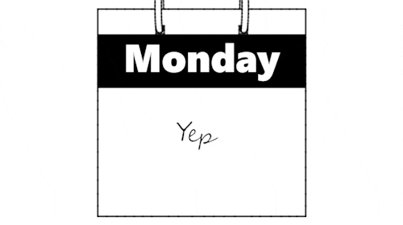
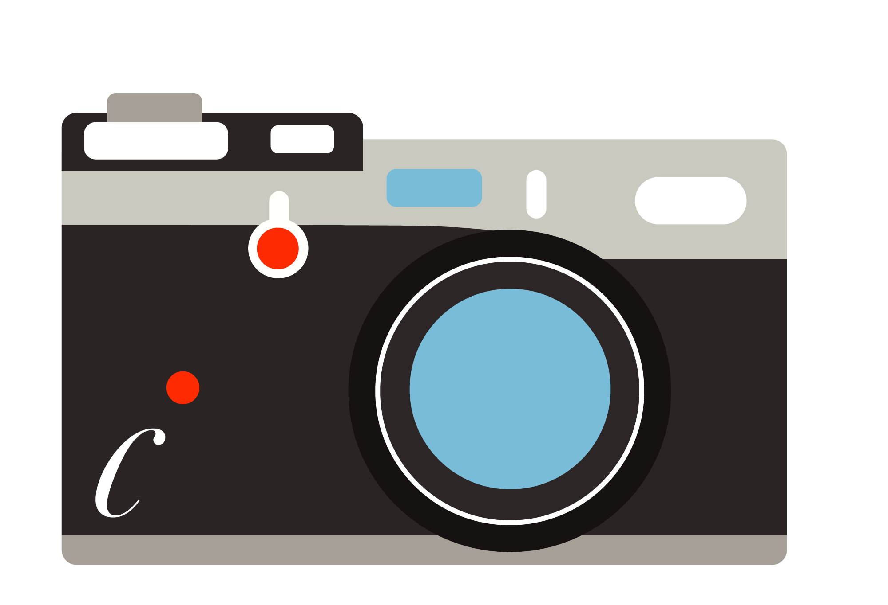
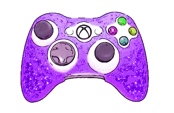
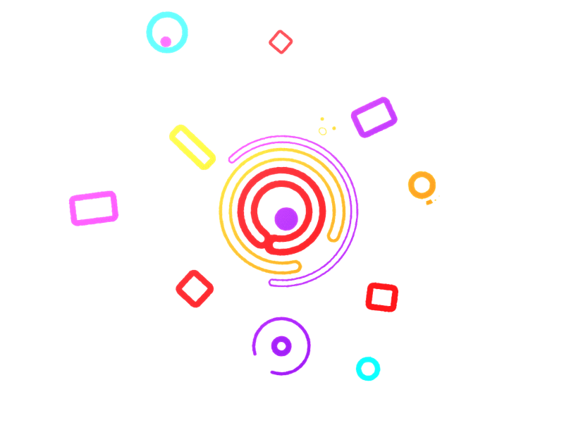
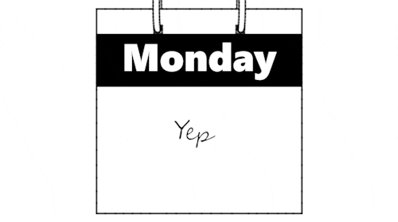
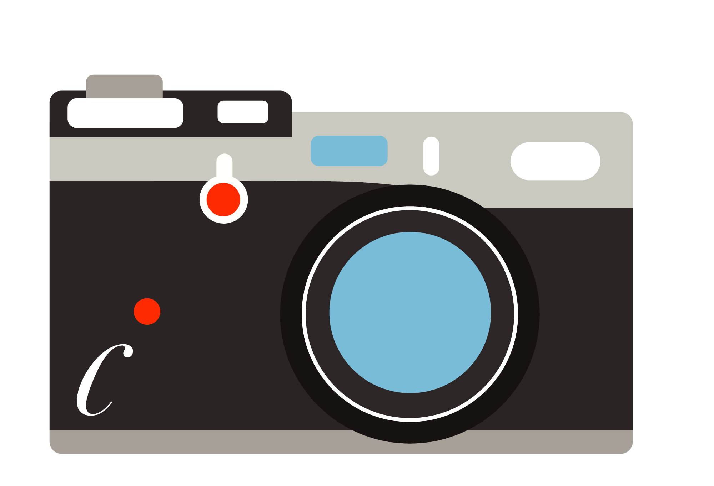
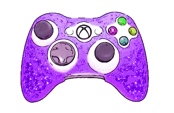
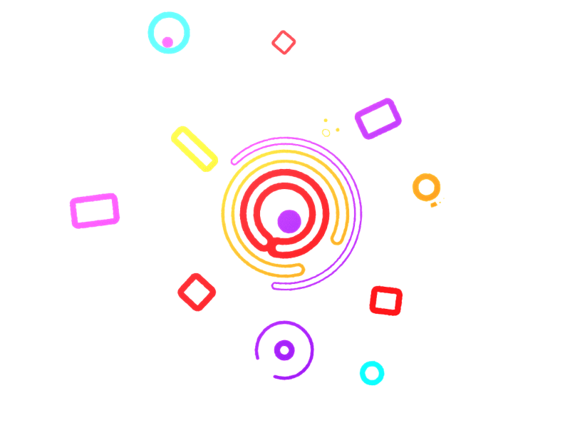

Jenni Funt is a student‍ at  studying Integrated Digital Media. During summer 2019
studying Integrated Digital Media. During summer 2019 she participated in the
Summer Launchpad
at NYU working as the Chief Administrative Officer of ChoreBug.
She handled day to day  operations of the company, worked on marketing, and
learned what it takes to build up a start-up from the ground up . She has a passion for
design, photography , and video games  and plans on using her skills towards graphic design 
and/or revolutionizing the gaming industry. Say Hello!
she participated in the
Summer Launchpad
at NYU working as the Chief Administrative Officer of ChoreBug.
She handled day to day  operations of the company, worked on marketing, and
learned what it takes to build up a start-up from the ground up . She has a passion for
design, photography , and video games  and plans on using her skills towards graphic design 
and/or revolutionizing the gaming industry. Say Hello!